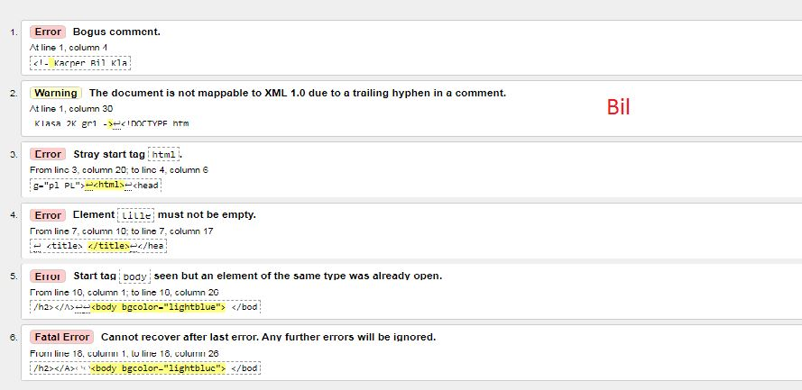
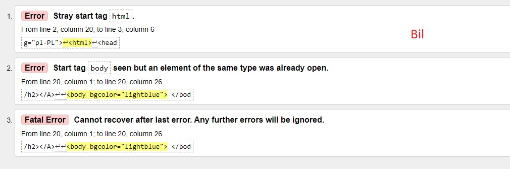

Walidator to strona lub program do wykrywania i sprawdzania błędów w kodach stron html. Walidacja to działanie mające na celu potwierdzenie w sposób udokumentowany i zgodny z założeniami, że procedury, procesy, urządzenia, materiały, czynności i systemy rzeczywiście prowadzą do zaplanowanych wyników.

